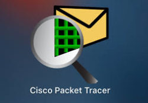
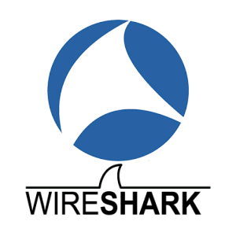
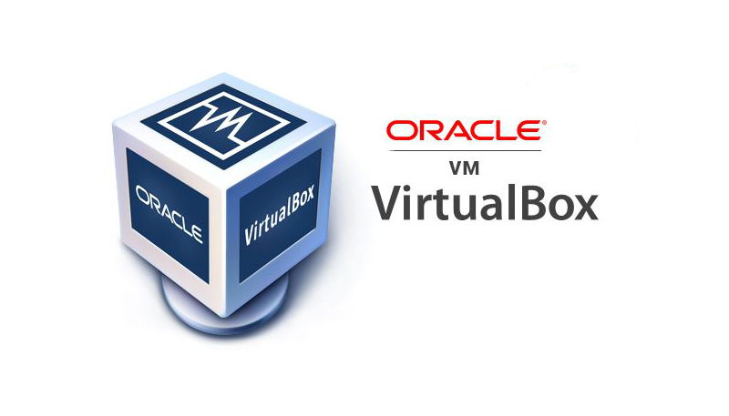

Les Compétences Apprises
Pendant mes études à l'IUT, il existe des ressources qui me permettent d'approfondir mes connaissances sur les réseaux informatiques.
Les TDs(travaux dirigés) et TPs(travaux pratiques) me permettent de :
- comprendre les différents protocoles réseaux
- configurer et dépanner le routage dynamique dans un réseau
- configurer les équipements actifs par exemple les routeurs, les commutateurs de façon basique
- configurer d'un réseau segmenté en VLAN
- sécuriser les accès des réseaux avec ACL (Access Control List)
- faire le câblage des réseaux
- maintenir les infrastructures réseaux grande distance (Internet)
- mettre en place d'une connexion multi-site via un réseau opérateur en configurant les protocoles MPLS(Multiprotocol Label Switching), BGP(Border Gateway Protocol) et VPLS(Virtual Private LAN Service)
- comprendre la mécanisme VPN(Virtual Private Network) qui permet à des utilisateurs distants de se connecter à un réseau privé à travers un réseau public, comme Internet
Les différents logiciels utilisés sont :
- Packet Tracer : Un logiciel de CISCO permettant de construire un réseau physique virtuel et de simuler le comportement des protocoles réseaux sur ce réseau. 
- Wireshark : Un outil de capture et d'analyse de paquets. Il capture le trafic du réseau et nous permet de lire les données de paquets pour les analyser. 
- VM Virtual Box : Un logiciel proposé par Oracle qui nous permet de créer une machine virtuelle (ou plusieurs) en virtualisant le système d'exploitation. 
- PuTTY : Un logiciel client de terminal qui permet aux utilisateurs de se connecter à des serveurs distants via des protocoles tels que SSH, Telnet.

Les certificats CCNA (Cisco Certified Network Associate) obtenus :
Le certificat CCNA : Introduction aux réseaux
Le lien vers le badge numérique : Badge numérique CCNA : Introduction aux réseaux
Le certificat CCNA : Notions de base sur la commutation, le routage et le sans fil
Le lien vers le badge numérique : Badge numérique CCNA : Notions de base sur la commutation, le routage et le sans fil
Les Projets
Les SAÉ (Situations d’Apprentissage et d’Évaluation) sont des mises en situation professionnelle qui permet de développer et de mettre en œuvre les compétences ciblés.
Les travaux de la SAÉ se font par projet, ces missions sont à effectuer sur des temps parfois encadrés mais en autonomie la plupart du temps.
Les objectifs des SAÉs sont de développer des compétences professionnelles, renforcer le travail en autonomie et en équipe.
SAÉ 33 - Concevoir un réseau informatique sécurisé multi-sites
Le projet consiste à mettre en place une infrastructure sécurisée pour plusieurs sites appartenant à une entreprise,
qui permettent aux utilisateurs d'avoir une connexion internet fiable et sécurisée.
Cette infrastructure multi-sites doit répondre à un cahier des charges qui
spécifie les exigences en termes de sécurité, de disponibilité et de performance du réseau.
Les solutions proposées doivent donc être justifiées en fonction des besoins de l'entreprise et des utilisateurs,
afin de garantir une connexion optimale pour tous les sites concernés.
Ce projet nécessite une étude approfondie de l'architecture réseau, de la sécurité informatique, de la gestion de projets
et de la communication pour assurer la réussite de cette infrastructure multi-sites sécurisée.
L'entreprise possède trois région : la région SUD, la région NORD et la région EST et chaque région a deux sites.
Nous sommes répartis dans plusieurs équipes et une équipe gère un site,
par exemple mon équipe travaille sur la région SUD site A de l'entreprise.
La topologie physique de l'entreprise
La topologie du projet ainsi que les protocoles à mettre en œuvre :
Le projet comporte deux phrases avant l'évaluation :
- La phase d'étude
- La phase de production sur les équipements réels
Pendant la phase d'étude, nous avons fait les configurations nécessaires dans la Packet Tracer. Le but de cette phase est de :
- Comprendre le cahier des charges
- Décomposer en sous-problème, analyser les complexités
- Savoir organiser et répartir les tâches, maîtriser les délais
- Tester la méthodologie afin de garantir le bon fonctionnement
La topologie de la région SUD site A dans la Packet Tracer
Pendant la phase de production sur les équipements réels, nous avons besoin de :
- Savoir organiser et répartir les tâches au sein de l'équipe
- Appliquer les configurations étudiées pendant la phase d'étude
- Définir un échéancier et maîtriser les délais, savoir s'adapter car nous n'avons que 15 minutes pour configurer les équipements pendant l'évaluation
La topologie câblée de la région SUD
Ce projet nous permettre d'acquérir les compétences, notamment : la mise en place d'une infrastructure réseau(la configurations de routeurs, de commutateurs, de serveurs et d'autres composants réseau), la sécurité des réseaux et aussi la capacité à travailler en équipe.
Le lien vous permettant d'accéder au diaporama de projet : Présentation SAE 33
SAÉ 21 - Construire un réseau informatique pour une petite structure
L'objectif de cette SAÉ, c'est de construire et mettre en place le réseau informatique d'une petite entreprise.
Durant ce projet, on a utilisé le logiciel Packet Tracer qui nous permet de configurer les équipements
par exemple les routeurs, les commutateurs, les pare-feux, etc. via une interface graphique.
Sur le Packet Tracer, on a simulé le réseau de petite entreprise demandé.
Le réseau de petite entreprise réalisé avec le Packet Tracer
La simulation de projet sur Packet Tracer :
Grâce à ce projet, nous comprenons mieux comment fonctionne le réseau au sein d'une entreprise.